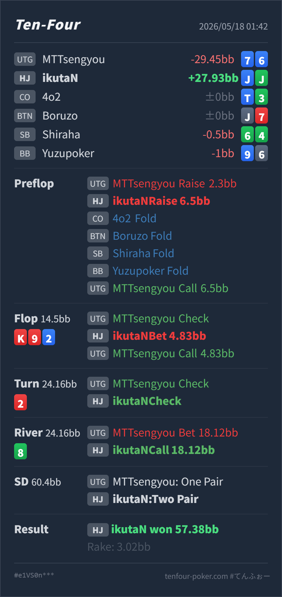

Preflop
許容J♦J♣ は続行確定ですが、UTG相手ではcall寄りも多い中上位pairです。
GTO基準では、UTG openに対するHJ J♦J♣ は明確に続行できますが、3bet一択ではなくcall寄りも多いハンドです。flop small c-bet、turn check back、river 75% betへのcallは、相手がmissed handや薄いbetを持つなら良い判断です。ただし、相手がUTGらしく堅い場合はriverのJJ no heartはかなり境界寄りになります。
J♦ J♣7♦ 6♦K♥ 9♥ 2♦ 2♥ 8♣2.3BB openにHJで J♦J♣ を3betし、K♥ 9♥ 2♦ 2♥ 8♣ のriver 75% betをcallしてよいか。J♦ J♣ 2♦ 2♥ K♥ のtwo pairです。Villainは 2♦ 2♥ K♥ 9♥ 8♣ のone pairで、Heroが勝っています。J♦ J♣7♦ 6♦2.3BB, HJ Hero raise 6.5BB, CO fold, BTN fold, SB fold, BB fold, UTG Villain callK♥ 9♥ 2♦ 2♥ 8♣14.5BB, UTG Villain check, HJ Hero bet 4.83BB, UTG Villain call24.16BB, UTG Villain check, HJ Hero check24.16BB, UTG Villain bet 18.12BB, HJ Hero call57.38BB, rake 3.02BB
許容J♦J♣ は続行確定ですが、UTG相手ではcall寄りも多い中上位pairです。
K♥ 9♥ 2♦可
HeroはKに負けるunderpairですが、QQ/TTやA-high、heartなしのbroadwayにはまだ勝っています。
2♥良い
HeroはJJ+22のtwo pairですが、heartを持たず、Kxやflushには負けています。
8♣良い寄り
HeroはJJ+22で、9x/8x/TTやbluffには勝ちますが、Kx以上には負けます。
| 論点 | その場で置きがちな見立て | どこがズレやすいか | 次回の基準 |
|---|---|---|---|
| UTG相手のJJ | JJなので基本3betでよさそう | JJは強いですが、UTG open相手ではQQ+やAKほど押し切るvalueではありません。特に 2.3BB openは基準より少し大きく、相手rangeも締まりやすいです。 | JJは続行確定。3betとcallを混ぜ、相手が堅いならcall寄り |
| K-high flopのsmall c-bet | 3bettorなのでK-highは打てそう | 3bettor側はAK/AA/KKを持つ一方、JJ自体はKに負けています。small c-betはrange pressureとして成立しますが、valueで大きく膨らませるhandではありません。 | JJは小さく打つかcheck。打った後はcallされたrangeを強めに見る |
| river bluff-catch | two pairなのでかなり強く見える | board pairによりHeroはtwo pairですが、相手のKx、flush、99/88/22には負けます。river 75%には約30%の勝率が必要で、相手にbluffがないなら薄いcallです。 | JJ no heartは相手依存のcall候補。missed handや薄いbetが多い相手にはcall |
| ストリート | その時点の見え方 | 実ハンドの位置づけ | 評価 | その場の一手 |
|---|---|---|---|---|
| Preflop | UTGが 2.3BB openし、HJから3betする場面です。UTGの基準openは 2BB なので、やや大きめです。 | J♦J♣ は続行確定ですが、UTG相手ではcall寄りも多い中上位pairです。 | 許容 | 3betは悪くありません。ただし 6.5BB は 2.3BB open相手にはやや小さめで、callに残す選択も有力です。 |
Flop K♥ 9♥ 2♦ | UTGがcheckし、3bettorのHeroにレンジ優位があります。ただしUTGのcall rangeにもKQs/AKs/99/heart系が残ります。 | HeroはKに負けるunderpairですが、QQ/TTやA-high、heartなしのbroadwayにはまだ勝っています。 | 可 | 4.83BB のsmall c-betは良いです。大きく打つより、range全体の圧とプロテクションを兼ねるサイズです。 |
Turn 2♥ | board pairかつfrontdoor heart完成です。UTGがcheckしています。 | HeroはJJ+22のtwo pairですが、heartを持たず、Kxやflushには負けています。 | 良い | check backで良いです。ここでbetすると、callされるrangeがKx/flush/強いpair寄りになり、JJのvalueが薄くなります。 |
River 8♣ | UTGが75% potを打っています。turn check back後なので、UTGはmissed handをbluffに回せる一方、Kx/flushのvalueもあります。 | HeroはJJ+22で、9x/8x/TTやbluffには勝ちますが、Kx以上には負けます。 | 良い寄り | callは良い判断です。必要勝率は約30%で、実戦のようにUTGが広くdefendしてriver bluffを持つなら十分に足ります。 |
2♥ は良いcheck backです。flush完成後にJJ no heartを無理にvalue betへ回すと、強いrangeにだけ続行されやすくなります。two pair 表示に引っ張られず、実際にはKx/flush/full houseに負けるbluff-catch寄りのJJとして扱うのが重要です。7♦6♦ で、UTG open後にHJ 3betをcallし、showdown valueなしでriver 75% betを打っています。このタイプには、turn check back後のJJを降りすぎるとかなり損します。